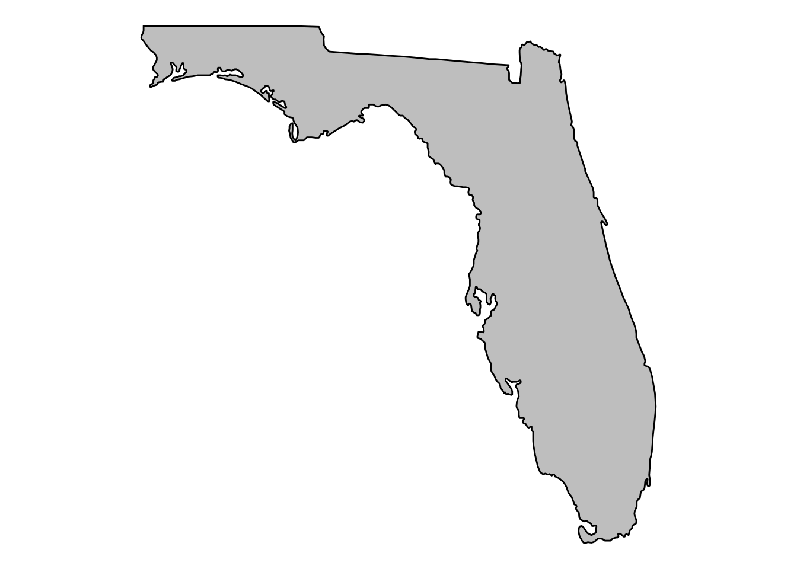

I came across this data set from the Florida Department of Education in March. In Florida school districts are organized by county and I saw this as an opportunity to improve my mapping skills.
This tutorial from Erin C. Anderson was instrumental in being able to complete this project. In fact a lot of the code chunks were stolen.
Data
The Florida Department of Education provides data on their website regarding the number of students by school that have missed more than 21 days of school. Go here for more information on this data
## Response [http://www.fldoe.org/core/fileparse.php/7584/urlt/1516ABS21DAYSchool.xls]
## Date: 2018-08-21 21:33
## Status: 200
## Content-Type: application/msexcel
## Size: 751 kB
## <ON DISK> /tmp/RtmpiSAizz/file7f41861c44d.xls## Warning: NAs introduced by coercion
## Warning: NAs introduced by coercionI want to map the average percent of students who missed 21 or more days during the 2015-2016 school year. Below is a tibble of the output.
## # A tibble: 74 x 2
## district_name mean
## <chr> <dbl>
## 1 ALACHUA 14.3
## 2 BAKER 19.6
## 3 BAY 15.3
## 4 BRADFORD 17.7
## 5 BREVARD 6.5
## 6 BROWARD 9.82
## 7 CALHOUN 17.8
## 8 CHARLOTTE 8.41
## 9 CITRUS 10.4
## 10 CLAY 9.69
## # ... with 64 more rowsWorking with ggmap
The first step is extract data to build the map.
#get state map
states <- map_data("state")This code gets the parameters for Florida
fl_df <- subset(states, region == "florida")The next step is to extract county parameters from Florida
counties <- map_data("county")
fl_county <- subset(counties, region == "florida")This chunk of code will display the state of Florida.
fl_base <- ggplot(data = fl_df, mapping = aes(x = long, y = lat, group = group)) +
coord_fixed(1.3) +
geom_polygon(color = "black", fill = "gray")
fl_base + theme_nothing()
This code chunk overlays the county shapes onto the Florida Map.
fl_base + theme_nothing() +
geom_polygon(data = fl_county, fill = NA, color = "white") +
geom_polygon(color = "black", fill = NA) # get the state border back on topMore data munging
In this chunk, I changed the name of the variable district_name to match the county data set. Case matters and the school district data set needed to be made lower in preparation of joining the data sets.
absent_21_c <- absent_21 %>%
rename("subregion" = "district_name")
absent_21_c$subregion <- tolower(absent_21_c$subregion)Not all of the district_name and map data perfectly match. This is code will fix that. You will see that the anti-join function is an easy way to test.
absent_21_c$subregion <- gsub("dade", "miami-dade", fixed = TRUE, absent_21_c$subregion)
absent_21_c$subregion <- gsub("desoto", "de soto", fixed = TRUE, absent_21_c$subregion)
absent_21_c$subregion <- gsub("st. johns", "st johns", fixed = TRUE, absent_21_c$subregion)
absent_21_c$subregion <- gsub("st. lucie", "st lucie", fixed = TRUE, absent_21_c$subregion)Ready to Join
This code chunk joins the two data sets.
map_d <- inner_join(fl_county, absent_21_c, by = "subregion")This code chunk uses the anti-join function to ensure that all the counties and school district names match up.
non_match <- anti_join(fl_county, absent_21_c, by = "subregion")
non_match## [1] long lat group order region subregion
## <0 rows> (or 0-length row.names)This code chunk sets parameters for the map outline.
ditch_the_axes <- theme(
axis.text = element_blank(),
axis.line = element_blank(),
axis.ticks = element_blank(),
panel.border = element_blank(),
panel.grid = element_blank(),
axis.title = element_blank()
)This code chunk plots the data from the school districts on to the map.
map_fl_school_absences <- fl_base +
geom_polygon(data = map_d, aes(fill = mean), color = "white") +
geom_polygon(color = "black", fill = NA) +
theme_bw() +
ditch_the_axes
map_fl_school_absencesSimilar to the example in the tutorial; the difference between school districts is not easily distinguishable on the map. This code chunk below is an example of how to add more color to the map.
eb2 <- map_fl_school_absences +
scale_fill_gradientn(colours = rev(rainbow(7)),
breaks = c(2, 4, 10, 100, 1000, 10000),
trans = "log10")
eb2
Share this post
Twitter
Google+
Facebook
Reddit
LinkedIn
StumbleUpon
Pinterest
Email